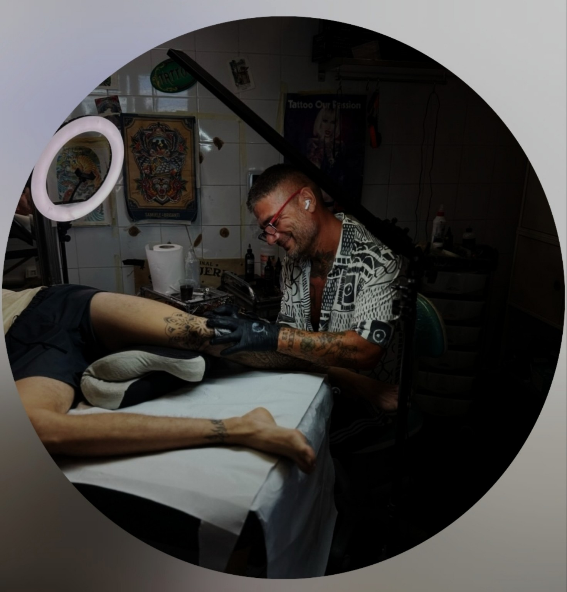

Mandami la tua idea
Indica soggetto, zona del corpo e dimensioni. Se hai una foto o un disegno di riferimento, allegalo.
TATTOOART
Tatuaggi e piercing.
Hai un soggetto in mente? Mandami una descrizione e un’immagine di riferimento. Ne parliamo insieme prima di fissare la seduta.
Sfoglia il portfolio di Christian.
TATUAGGI
CHRISTIAN
GIAMMARINO

IL TATUATORE
Mi chiamo Christian Giammarino e sono il tatuatore di Tattooart. Sul mio profilo Instagram condivido i lavori realizzati in studio.
Per iniziare il tuo progetto, raccontami cosa hai in mente: il soggetto, il punto del corpo e le dimensioni. Un’immagine di riferimento ci aiuta a capirci meglio; poi definiamo insieme come procedere.
Puoi scrivermi direttamente oppure chiedere una consulenza per parlarne di persona.
RICHIESTE E APPUNTAMENTI
Indica soggetto, zona del corpo e dimensioni. Se hai una foto o un disegno di riferimento, allegalo.
Valutiamo il progetto e definiamo il preventivo. Se serve, fissiamo una consulenza in studio.
Concordiamo data e durata dopo aver definito il lavoro. La richiesta online non prenota una seduta automaticamente.
PRIMA DI SCRIVERMI
Preventivo, riferimenti e appuntamenti.
Il prezzo dipende dal progetto. Nella richiesta indica cosa vorresti, dove e quanto grande: sono le informazioni da cui partire per un preventivo.
In questo percorso prenoti una consulenza. La seduta del tatuaggio viene concordata dopo la valutazione di Christian, perché durata e preparazione dipendono dal progetto.
Sì, nel modulo puoi allegare un’immagine per spiegare la tua idea. Christian potrà consultarla insieme alla descrizione della tua idea.
Per un piercing, scrivi su WhatsApp o chiama lo studio per chiedere disponibilità e informazioni. Il modulo e il calendario del sito sono dedicati ai tatuaggi.
Per annullare o spostare un appuntamento, contatta lo studio su WhatsApp o per telefono. Concordiamo insieme un nuovo orario.
RECENSIONI
PASSA IN STUDIO
Via Coni Zugna, 83/A
Isola Sacra · 00054 Fiumicino, Roma